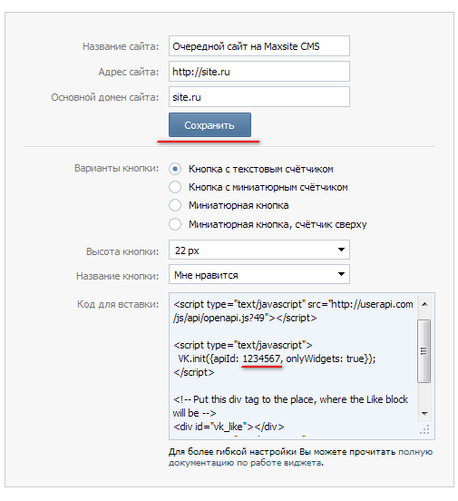

<div class="social-buttons"> <div class="social-buttons_before">Текст перед кнопками</div> <div class="social-buttons_grid"> <div class="social-buttons_cell social-buttons_tw">Twitter</div> <div class="social-buttons_cell social-buttons_fb">Facebook</div> <div class="social-buttons_cell social-buttons_vk">ВКонтакте</div> <div class="social-buttons_cell social-buttons_vk-wg">Виджет ВКонтакте</div> <div class="social-buttons_cell social-buttons_ggl">Google</div> <div class="social-buttons_cell social-buttons_pkt">Pocket</div> <div class="social-buttons_cell social-buttons_mm">Мой Мир</div> <div class="social-buttons_cell social-buttons_ok">Одноклассники</div> </div> <div class="social-buttons_after">Текст после кнопок</div> </div>
Чтобы получить ID вы должны быть авторизованы в социальной сети. На странице виджета надо заполнить относящиеся к сайту поля и нажать "Сохранить". После этого в блоке «Код для вставки» появится число, которое надо скопировать и вставить в поле API_ID в настройках плагина.
